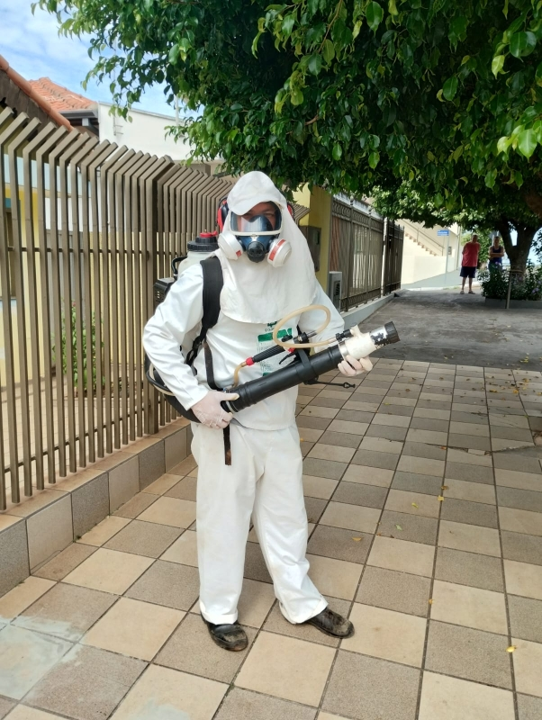
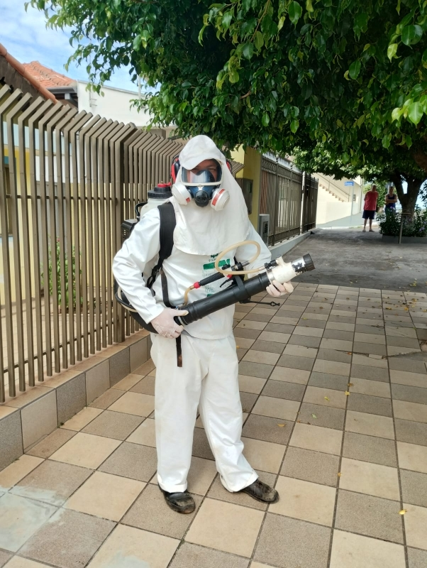
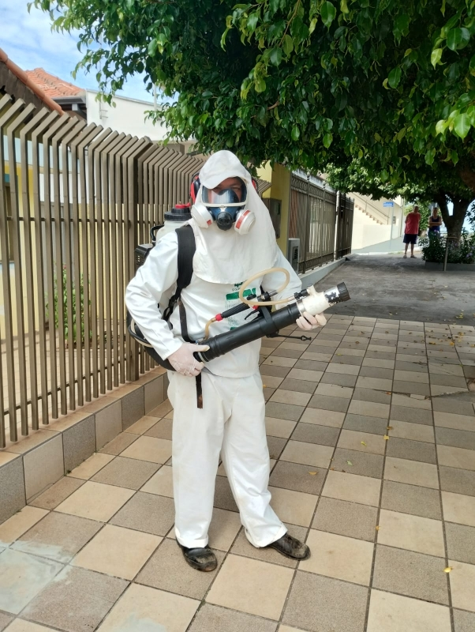

DADOS LEVANTADOS
O Departamento de Controle de Endemias da Secretaria Municipal de
Saúde identificou o primeiro caso positivo de dengue no município no
início de 2024, em contraste com os 63 casos registrados no mesmo
período do ano anterior. A agente de combate a Endemias, Lucimara
Rodrigues Gea, enfatizou a importância do apoio da administração e da
população nas ações preventivas para reduzir os números. O caso foi
detectado em uma moradora da área central da cidade, desencadeando a
realização de ações de bloqueio, como o fumacê, para eliminar o
mosquito transmissor. Enquanto isso, a situação nacional revela que o
Brasil ultrapassou 1 milhão de casos de dengue em 2024. Os dados do
Ministério da Saúde mostram que Minas Gerais lidera com 424.179 casos
registrados, seguido por São Paulo com 225 mil casos. Outros estados
como Distrito Federal, Paraná, Rio de Janeiro, Goiás e Espírito Santo
também apresentam números significativos. A tendência histórica da
dengue no país indica que o pico dos surtos geralmente ocorre entre
março e abril. Em resposta à crescente incidência da doença, São Paulo
declarou emergência de saúde pública por dengue após atingir 300 casos
confirmados por 100 mil habitantes. O estado já ultrapassou os 150 mil
casos confirmados em 2024, com outros 86.099 em investigação e 38
mortes registradas. O governo paulista tomou essa medida após
recomendações do Centro de Operações de Emergência (COE) da Secretaria
de Estado de Saúde. Diante desse cenário preocupante, é fundamental
intensificar as medidas preventivas e mobilizar esforços para
controlar a propagação da dengue tanto a nível municipal quanto
nacionalmente. A colaboração entre autoridades, profissionais de saúde
e a população é essencial para combater eficazmente essa doença
transmitida pelo mosquito Aedes aegypti.
 

